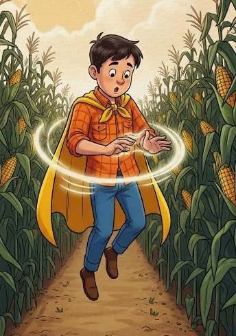
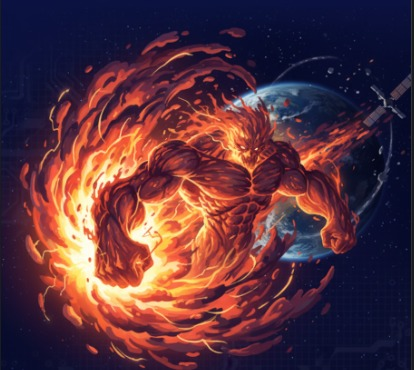

Traduza os segredos do universo em aventuras!
CosmoContos transforma a ciência complexa do clima espacial em histórias cativantes e interativas para crianças, inspirando a próxima geração de cientistas e exploradores.
Comece a DescobertaO Problema: Um Universo Distante
Fenômenos como tempestades solares são abstratos e complexos para as crianças. A falta de ferramentas educativas que sejam ao mesmo tempo precisas e divertidas é uma oportunidade perdida para inspirar mentes jovens.
Nossa Solução Criativa
Criamos uma plataforma web que usa o poder do storytelling para "traduzir" a ciência. Transformamos uma tempestade solar em um "espirro do Sol" e o campo magnético no "escudo de força da Terra", tornando o aprendizado uma aventura inesquecível.
Conheça Nossos Heróis e Vilões Cósmicos

Super Necão (Neco)
Um menino curioso e ingênuo que ama a vida no campo. Com sua capa de saco feita pela avó, ele ganha poderes especiais: pode voar, ouvir as "vozes" do sol e enxergar auroras como ninguém!

Tempestão Solares
Uma Ejeção de Massa Coronal gigante e furiosa! Ele não é mau, apenas muito poderoso e descontrolado, causando apagões e interferências por onde passa com sua energia.
Módulos de Aprendizagem Temáticos
A Fúria do Sol
Acompanhe Super Necão em sua primeira aventura para proteger a Terra da energia de um vilão superpoderoso, o Tempestão Solares.
O Dia em que o Sol Espirrou
Descubra o que acontece quando o Sol solta um "espirro" gigante e como isso afeta a Terra e seus habitantes.
O Vento Invisível
Explore o mistério do Vento Solar, uma força invisível que viaja pelo espaço e cria fenômenos incríveis como as auroras.
Observatório do Super Necão
Aqui vemos o que o Sol está aprontando agora mesmo! (Dados simulados para diversão)
Velocidade do Vento Solar
450 km/s
Um ventinho rápido hoje!
Atividade Solar
Calma
O Sol está bem tranquilo.
Chance de Aurora
15%
Baixa chance de ver luzes mágicas.
Interatividade e Gamificação
Animações Simples
Ilustrações que dão vida aos conceitos científicos, mostrando como os fenômenos espaciais acontecem.
Minigames Educativos
Jogos rápidos ao final de cada capítulo para testar o conhecimento de forma divertida e engajante.
Diário de Bordo Cósmico
Um sistema de recompensas com adesivos virtuais para colecionar a cada conceito aprendido.